Normalizing Flows¶
Contents
This module contains all relevant functions to run experiments with flow-based likelihood models.
General Notes¶
Performing regression experiments with a flexible likelihood parametrized by a normalizing flow. The architecture of the system is the following:
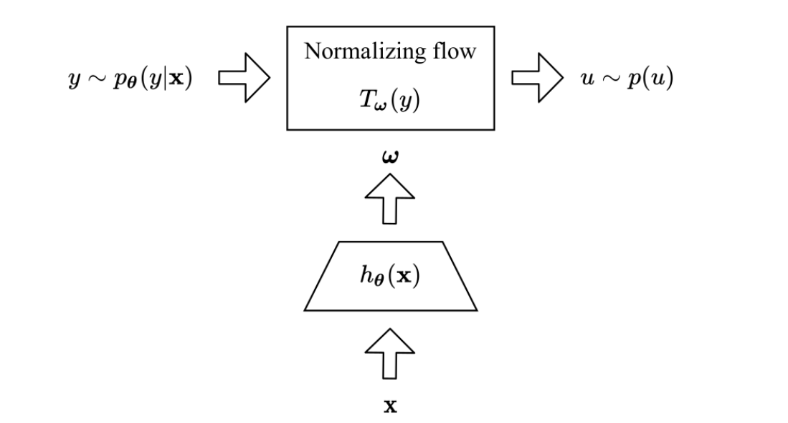{kind=link}
Note that the models generated are Bayesian by default (i.e. the hypernetwork is Bayesian). However, a deterministic model can be used by setting the option --mean_only.
Furthermore, regression can be done using one of two toy regression datasets based on a cubic polynomial. In the basic setting, a polynomial with a single mode is generated. However if desired a bimodal distribution can be used by setting the option --noise=bimodal.
Unimodal 1D Toy Experiments¶
Please run the following command to see the available options for running 1D toy experiments.
$ python3 train.py --help
Deterministic hypernetwork and normalizing flow¶
The following run achieves lowest negative log-likelihood on the validation set for this model:
$ python3 train.py --kl_scale=0 --train_sample_size=1 --val_sample_size=1 --n_iter=7001 --lr=0.01 --clip_grad_norm=-1 --hmlp_arch=10,10,10 --hnet_dropout_rate=-1 --flow_depth=5 --flow_layer_type=splines --val_iter=1000 --num_train=20 --mean_only --noise=gaussian
Bayesian hypernetwork and normalizing flow¶
The following run achieves lowest negative log-likelihood on the validation set for this model:
$ python3 train.py --disable_lrt_test --n_iter=20001 --lr=0.01 --clip_grad_norm=-1 --train_sample_size=1 --local_reparam_trick --hmlp_arch=20,20 --hnet_dropout_rate=0.2 --flow_depth=1 --flow_layer_type=splines --val_iter=1000 --val_sample_size=100 --num_train=20 --noise=gaussian
Bimodal 1D Toy Experiments¶
Deterministic hypernetwork and normalizing flow¶
The following run with 20 training points achieves lowest negative log-likelihood on the validation set for this model:
$ python3 train.py --kl_scale=0 --train_sample_size=1 --val_sample_size=1 --n_iter=30001 --lr=0.01 --clip_grad_norm=1 --hmlp_arch=10,10 --hnet_dropout_rate=-1 --flow_depth=1 --flow_layer_type=splines --val_iter=1000 --num_train=20 --mean_only --noise=bimodal
The following run with 50 training points achieves lowest negative log-likelihood on the validation set for this model:
$ python3 train.py --kl_scale=0 --train_sample_size=1 --val_sample_size=1 --batch_size=32 --n_iter=10001 --lr=0.01 --clip_grad_norm=1 --hmlp_arch=100,100 --hnet_dropout_rate=-1 --hnet_net_act=sigmoid --flow_depth=3 --flow_layer_type=splines --val_iter=1000 --num_train=50 --mean_only --noise=bimodal --publication_style
The following run with 1000 training points achieves lowest negative log-likelihood on the validation set for this model:
$ python3 train.py --kl_scale=0 --train_sample_size=1 --val_sample_size=1 --n_iter=50001 --lr=0.001 --clip_grad_norm=100 --hmlp_arch=10,10 --hnet_dropout_rate=-1 --flow_depth=3 --flow_layer_type=splines --val_iter=1000 --num_train=1000 --mean_only --noise=bimodal
Bayesian hypernetwork and normalizing flow¶
The following run with 20 training points achieves lowest negative log-likelihood on the validation set for this model:
$ python3 train.py --disable_lrt_test --n_iter=20001 --lr=0.0001 --clip_grad_norm=-1 --train_sample_size=10 --local_reparam_trick --hmlp_arch=10,10 --hnet_dropout_rate=-1 --flow_depth=1 --flow_layer_type=splines --val_iter=1000 --val_sample_size=190 --no_plots --num_train=20 --noise=bimodal
The following run with 50 training points achieves lowest negative log-likelihood on the validation set for this model:
$ python3 train.py --disable_lrt_test --batch_size=32 --n_iter=10001 --lr=0.001 --clip_grad_norm=100 --train_sample_size=1 --prior_variance=1.0 --local_reparam_trick --kl_scale=0.01 --hmlp_arch=100,100 --hnet_dropout_rate=-1 --hnet_net_act=sigmoid --flow_depth=2 --flow_layer_type=splines --val_iter=1000 --val_sample_size=190 --num_train=50 --noise=bimodal
The following run with 1000 training points achieves lowest negative log-likelihood on the validation set for this model:
$ python3 train.py --n_iter=50001 --lr=0.001 --clip_grad_norm=1 --train_sample_size=1 --hmlp_arch=5,5 --hnet_dropout_rate=-1 --flow_depth=3 --flow_layer_type=splines --val_iter=1000 --val_sample_size=190 --no_plots --num_train=1000 --noise=bimodal
Bimodal 2D Toy Experiments¶
Please run the following command to see the available options for running 2D toy experiments.
$ python3 train_2d.py --help
Deterministic hypernetwork and normalizing flow¶
The following run with 3000 training points achieves lowest negative log-likelihood on the validation set for this model:
$ python3 train_2d.py --kl_scale=0 --train_sample_size=1 --val_sample_size=1 --n_iter=10001 --lr=0.01 --clip_grad_norm=100 --hmlp_arch=20,20,20 --hnet_dropout_rate=-1 --conditioner_arch=5,5 --flow_depth=10 --flow_layer_type=splines --val_iter=1000 --num_train=3000 --mean_only --noise=bimodal --offset=15 --cov=300,20
Steering Angle Prediction Experiments¶
Please run the following command to see the available options for running 1D toy experiments.
$ python3 train_udacity.py --help
Steering Angle Prediction Experiments¶
The following run with a Resnet-18 achieves lowest negative log-likelihood on the validation set for this model:
$ python3 train_udacity.py –mean_only –batch_size=16 –n_iter=1000 –epochs=30 –lr=0.0001 –adam_beta1=0.5 –clip_grad_value=-1 –clip_grad_norm=-1.0 –kl_scale=0 –flow_depth=15 –flow_layer_type=”splines” –train_sample_size=1 –val_sample_size=1 –net_type=”iresnet” –iresnet_use_fc_bias –net_act=”relu” –no_bias –dropout_rate=-1 –hmlp_arch=”” –hnet_net_act=”relu” –hnet_dropout_rate=-1 –hmlp_uncond_in_size=10
API¶
Helper functions for training scripts.
-
normalizing_flows.train_utils.compute_entropy_nf(mnet, hnet, config, x_torch, num_inputs, num_samples=1000, num_models=100)[source]¶ Compute the entropy of a posterior predictive distribution based on NFs.
For details about the value being compute please refer to
gaussian_likelihoods.train_utils.compute_entropy_gaussian().- Parameters
mnet – The main network.
hnet – The hypernetwork.
config – The configuration.
x_torch (torch.Tensor) – The inputs.
num_inputs (int) – Size of the input range.
num_samples (int) – The number of samples to use for each input.
num_models (int) – The number of models to sample for Bayesian networks.
- Returns
- The averaged entropy across weight samples for the entire
input range.
- Return type
(np.array)
-
normalizing_flows.train_utils.compute_nf_loss(flow, Y, logabsdet, reduction='mean')[source]¶ Returns the loss of the normalizing flow.
This function deals with a single model, and the sum for the MC estimate is therefore done outside this function.
Overall, we want to minimize the expectation over our training samples of the KL divergence between our groundtruth
 and our
predictions 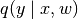, so we want to minimize:
and our
predictions 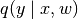, so we want to minimize: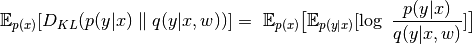
Dropping the terms that don’t depent on the posterior we obtain that we want to minimize the negative cross-entropy 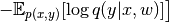.
In a normalizing flow, we have the following expression for 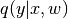:
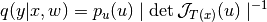
Furthermore we have that 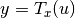 so 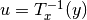. Therefore 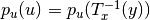, and be obtain:
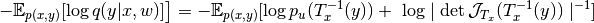
Noticing that 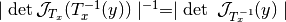 we obtain the following MC estimate and loss function:
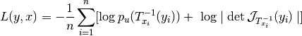
- Parameters
flow (SimpleFlow) – The normalizing flow.
Y – Output tensor consisting of means. Same shape as
T.logabsdet – The log of the absolute of the Jacobian.
- Returns
The loss.
- Return type
(float)
-
normalizing_flows.train_utils.max_deviation(data, flow, hnet, device, x=None)[source]¶ Computes the maximum deviation between forward and inverse passes of a normalizing flow.
- Parameters
(...) – See docstring of function
normality_test().- Returns
The maximum deviation.
- Return type
(float)
-
normalizing_flows.train_utils.normality_test(data, flow, hnet, config, device, x=None, sample_size=100, return_samples=False)[source]¶ Performs the Shapiro–Wilk test on the null hypothesis that the likelihood is normally distributed at a training point.
See SciPy _documentation.
- Parameters
data – Data handler.
flow – Normalizing flow.
hnet – Hypernetwork.
device – CUDA device.
config – The experiment config.
x (optional) – A point at which to test the normality of the likelihood.
sample_size – Sample size to use for the normality test.
return_samples – If True, the samples used to compute the p-value are also returned.
- Returns
p-value of the test.
- Return type
(float)
Simple normalizing flow for 1D regression experiments¶
Original code by Francesco d’Angelo and Rafael Daetwyler.
-
class
normalizing_flows.simple_regression.simple_flow.SimpleFlow(depth, dimensionality=1, layers='perceptron', activation_fn=<class 'normalizing_flows.simple_regression.diffeomorphisms.leaky_relu.LeakyReLU'>, use_bias=True, in_fn=None, out_fn=<class 'normalizing_flows.simple_regression.diffeomorphisms.log_transform.LogTransform'>, spline_bound=1.0, **kwargs)[source]¶ Bases:
hypnettorch.mnets.mlp.MLPImplementation of an MLP-based normalizing flow.
This is a normalizing flow based on a simple fully-connected network, that receives input vector 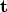 and outputs a vector
 of real values.
of real values.- Parameters
depth (int) – The depth (number of layers) of the flow.
dimensionality (int) – The dimensionality of the inputs and outputs.
layers (str) – The type of layer to be used.
activation_fn – The nonlinearity used in hidden layers. If
None, no nonlinearity will be applied.use_bias (bool) – Whether layers may have bias terms.
in_fn (optional) – If provided, this function will be applied to the input neurons of the network.
out_fn (optional) –
If provided, this function will be applied to the output neurons of the network.
Warning
This changes the interpretation of the output of the
forward()method.
-
forward(t, weights, preprocessed=False)[source]¶ Forward pass through the flow.
- Parameters
t (torch.Tensor) – The inputs to the flow.
weights (torch.Tensor) – The weights of the flow.
preprocessed – Whether the weights have been preprocessed.
- Returns
Tuple containing:
u: The output of the flow.
- logabsdet: The absolute value of the log of the Jacobian of
the flow.
- Return type
(tuple)
-
get_max_deviation(x, weights)[source]¶ Get maximum deviation between forward and backward passes.
- Parameters
x (torch.Tensor) – The forward inputs.
weights – The weights of the layer.
- Returns
The maximum absolute deviation across the batch.
- Return type
(float)
-
log_p0(u)[source]¶ Compute the log of the probability of the input.
- Parameters
u (torch.Tensor) – The sample for which to evaluate the probability.
- Returns
The probability.
- Return type
(float)
Spline layer to be used for normalizing flows¶
Original code by Francesco d’Angelo and Rafael Daetwyler, adapted from https://github.com/bayesiains/nflows.
-
class
normalizing_flows.simple_regression.layers.splines.PiecewiseRationalQuadraticCDF(shape, num_bins=10, tails=None, tail_bound=1.0, min_bin_width=0.001, min_bin_height=0.001, min_derivative=0.001)[source]¶ Bases:
nflows.transforms.base.TransformImplementation of a piecewise rational quadratic CDF.
This class can be used as a layer for a normalizing flow.
- Parameters
shape (int) – The size of the inputs and outputs.
num_bins (int) – The number of spline segments.
tails (str or None) – The type of tails used. If
linear, no derivatives will be used at the tails.max_bin_width (float) – The maximum bin width.
min_bin_width (float) – The minimum bin width.
min_derivative (float) – The minimum derivative in the segments.
Initializes internal Module state, shared by both nn.Module and ScriptModule.
-
forward(inputs, context=None, single_layer=False)[source]¶ Forward pass through the spline.
- Parameters
inputs (torch.Tensor) – The inputs.
context (list) –
Miscellaneous information. It is a list of length four containing:
the parameters (weights and biases) of the
the index of the layer
the nonlinearity
a dictionary of remaining kwargs
single_layer (bool) – Whether the context corresponds to a single layer or all layers.
- Returns
The output.
- Return type
-
get_param_shapes()[source]¶ Get the shapes of the trainable parameters.
- Returns
- The unnormalized widths, heights and derivatives at each
spline segment.
- Return type
(list)
-
inverse(inputs, context=None)[source]¶ Inverse pass through the spline.
- Parameters
inputs (torch.Tensor) – The inputs.
context (list) – The context for the computation.
- Returns
The output.
- Return type
-
preprocess_weights(weights)[source]¶ Preprocess the weights.
- Parameters
weights (torch.Tensor) – The weights.
- Returns
Tuple containing:
-uw: The unnormalized widths. -uh: The unnormalized heights. -ud: The unnormalized derivatives.
- Return type
(tuple)
Perceptron for a normalizing flow¶
Original code by Francesco d’Angelo and Rafael Daetwyler.
-
class
normalizing_flows.simple_regression.layers.perceptron.Perceptron[source]¶ Bases:
nflows.transforms.base.TransformImplementation of a perceptron layer for normalizing flows.
Initializes internal Module state, shared by both nn.Module and ScriptModule.
-
forward(inputs, context)[source]¶ Forward pass through the layer.
- Parameters
input (torch.Tensor) – The inputs to the layer.
context (list) –
Miscellaneous information. It is a list of length four containing:
the parameters (weights and biases) of the
the index of the layer
the nonlinearity
a dictionary of remaining kwargs
- Returns
Tuple containing:
output: The output of the layer.
logabsdet: The log of the absolute values of the derivative.
- Return type
(tuple)
-
inverse(inputs, context)[source]¶ Inverse pass through the layer.
- Parameters
input (torch.Tensor) – The (inverse) inputs to the layer.
(...) – See docstring of function
forward().
- Returns
Tuple containing:
output: The output of the layer.
logabsdet: The log of the absolute values of the derivative.
- Return type
(tuple)
-
static
make_invertible(w, eps=1e-06)[source]¶ Make weight matrix invetible.
Ensures that all weight magnitues are at least eps.
- Parameters
w – The weight matrix.
eps (float) – The value to be added to the weights.
- Returns
The weights.
-
static
preprocess_weights(weights, bias)[source]¶ Preprocess the weights.
- Parameters
weights (torch.Tensor) – The weights.
bias (bool) – Whether a bias term exists.
- Returns
Tuple containing:
-w_weights: The weights. -b_weights: The biases.
- Return type
(tuple)
-
Bivariate normalizing flow for 2D regression experiments¶
Original code by Hamza Keurti.
-
class
normalizing_flows.simple_regression.bivariate_flow.BivariateFlow(depth, permute=None, layers='perceptron', conditioner_arch='10, 10', activation_fn=<class 'normalizing_flows.simple_regression.diffeomorphisms.leaky_relu.LeakyReLU'>, use_bias=True, in_fn=None, out_fn=<class 'normalizing_flows.simple_regression.diffeomorphisms.log_transform.LogTransform'>, spline_bound=1.0, **kwargs)[source]¶ Bases:
hypnettorch.mnets.mlp.MLPImplementation of a multi-dimensional normalizing flow.
This is a normalizing flow based on our simple 1-D version, but that allows having outputs with higher dimensions.
- Parameters
(...) – See docstring of class
simple_flow.
-
forward(t, weights, preprocessed=False)[source]¶ Forward pass through the flow.
- Parameters
t (torch.Tensor) – The inputs to the flow.
weights (torch.Tensor) – The weights of the flow.
preprocessed – Whether the weights have been preprocessed.
- Returns
Tuple containing:
u: The output of the flow.
- logabsdet: The absolute value of the log of the Jacobian of
the flow.
- Return type
(tuple)
-
log_p0(u)[source]¶ Compute the log of the probability of the input.
- Parameters
u (torch.Tensor) – The sample for which to evaluate the probability.
- Returns
The probability.
- Return type
(float)